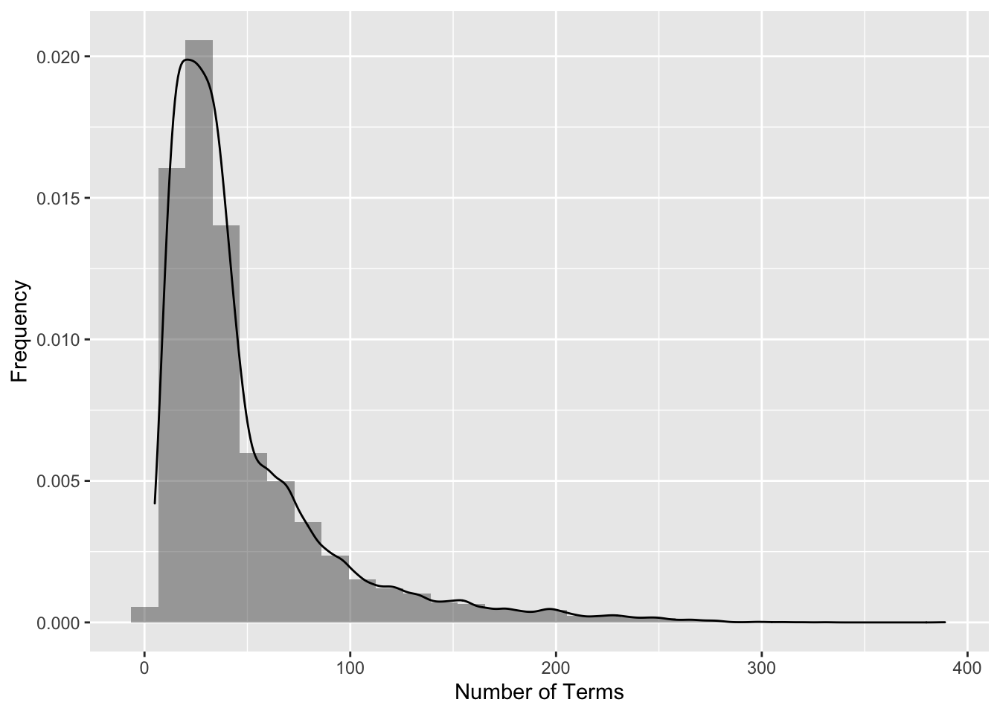

2 Exploratory Analysis
Key Takeaways:
- Some terms are extraordinarily frequent in this corpus. The following words belong on our stoplist for this project. We could likely grow this list, but it’s a good start:
'reuter', 'dlrs', 'mln', 'said','will', 'year', 'compani','pct','corp' - Not all documents in this corpus are created equal. There appear to be a mix of some type labeled “briefs” and other more traditional article-like newswires. The briefs don’t appear to have any text at all, but they have titles - They have no field tagged as
<BODY>and the<TEXT>field only contains the title - so we have to clean that up in our initial processing. - Huge skew on document length. Normalization will surely help.
2.1 Term Frequencies
This initial exploration of term frequencies allowed us to find some extraordinarily common words for this corpus that were added to the stop list. Not all common words were added to the stop list, however. Some common words may still have found relevance in determining certain groups of documents (an example would be the abbreviation ‘vs’ which indicates a comparison, most notably from an earnings report.)
Documents per word
bin = weightBin(tdm)
df=data.frame(docFreqs = row_sums(bin))
g1 = ggplot(df,aes(x=docFreqs)) +
geom_histogram(aes(y=..density..), alpha=0.5) + geom_density( alpha = 0.2) +
labs(x = "Number of Documents in which \n a Word Appears", y="Frequency")
df=data.frame(docFreqs=df$docFreqs[df$docFreqs<100] )
g2 = ggplot(df,aes(x=docFreqs)) +
geom_histogram(aes(y=..density..), alpha=0.5) + geom_density( alpha = 0.2) +
labs(x = "Number of Documents in which \n a Word Appears", y='Frequency',
title='Same Distribution Cut at x=100')
grid.arrange(g1,g2,ncol=2)
Words per doc
bin = weightBin(tdm)
df=data.frame(docSums = col_sums(bin))
g1 = ggplot(df,aes(x=docSums)) +
geom_histogram(aes(y=..density..), alpha=0.5) + geom_density( alpha = 0.2) +
labs(x = "Number of Terms", y="Frequency")
g1
TF-IDF per word
tfi = weightTfIdf(tdm)
df = data.frame(termFreqs = row_sums(tfi))
g1 = ggplot(df,aes(x=termFreqs)) +
geom_histogram(aes(y=..density..), alpha=0.5) + geom_density( alpha = 0.2) +
labs(x = "Sum of TF-IDF Weights \n for each words")
df=data.frame(termFreqs=df$termFreqs[df$termFreqs<100] )
g2 = ggplot(df,aes(x=termFreqs)) +
geom_histogram(aes(y=..density..), alpha=0.5) + geom_density( alpha = 0.2) +
labs(x = "Sum of TF-IDF Weights \n for each word", y='Frequency',
title='Same Distribution Cut at x=100')
grid.arrange(g1,g2,ncol=2)2.2 via SVD
Try to get an idea of the meaningful dimensionality of the data with a screeplot.
Screeplot
# tfidf_tdm = weightTfIdf(tdm, normalize=T)
# # # MUST NORMALIZE THOSE DOCUMENT LENGTHS!!
# tfidf_tdm = apply(tfidf_tdm, 2, function(x){x/c(sqrt(t(x)%*%x))})
# tfidf_tdm <- as(tfidf_tdm, "sparseMatrix")
# svd = irlba(tfidf_tdm, 150)
# save(svd,tfidf_tdm,file='docs/final_data_plots/svd.RData')
load('docs/final_data_plots/svd.RData')
df = data.frame(x=1:150,d=svd$d)
g1 = ggplot(data=df, aes(x=x, y=d, group=1)) +
geom_line(color="red")+labs(y='Singular Values',x='index',
title='Screeplot of Reuters tf-idf Matrix, vlines at 10, 25') +
geom_point() +
geom_vline(xintercept = 25, linetype="dotted", color = "blue", size=1) +
geom_vline(xintercept = 10, linetype="dotted", color = "blue", size=1)
u.df = data.frame(x=svd$v[,1], y=svd$v[,2])
g12-D Projection
Our initial Creation of this SVD Projection allowed us to see that we had an issue with briefs vs. articles in this data, something that may have caused noise in subsequent analysis had we not been careful about the exploratory phase.
fig <- plot_ly(type = 'scatter', mode = 'markers')
fig <- fig %>%
add_trace(
x = svd$v[,1],
y = svd$v[,2],
text = ~paste('heading:', head ,"<br>text: ", raw_text ),
hoverinfo = 'text',
marker = list(color='green', opacity=0.6),
showlegend = F
)
# saveWidget(fig,file='docs/svd_projection.html')